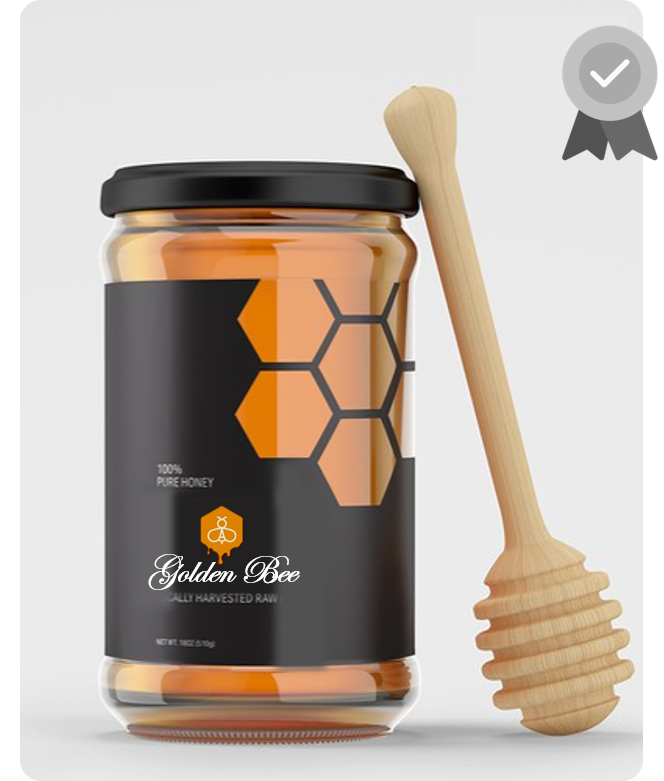
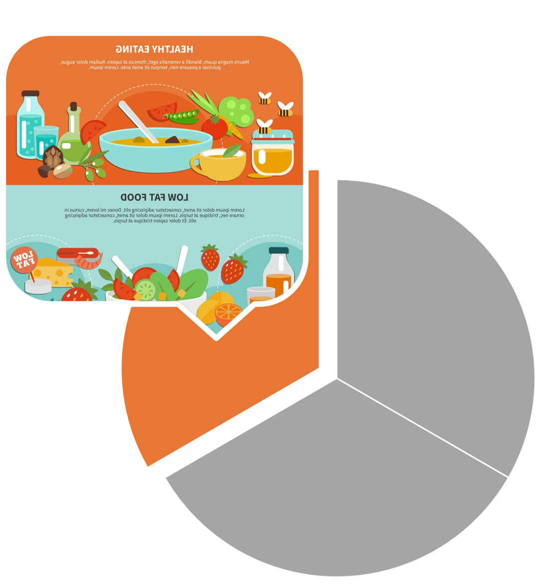
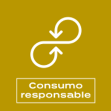
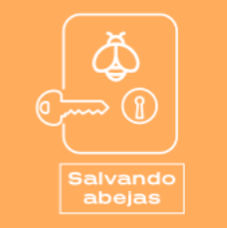
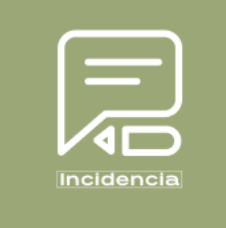

Golden Bee
ACIAGO
Golden Bee
Sabor de la Naturaleza, del campo a tu mesa.
Nuestra empresa te brinda la oportunidad de deleitarte en cualquier lugar de la forma mas natural.
Mision
Golden Bee Tiene como misión fomentar la
...Leer Más
apicultura, el cuidado de las abejas y el
medio ambiente e impulsar el consumo de
productos apícolas como miel, polen, jalea
real, propóleos y cera, cumpliendo
siempre con los más altos estándares de
calidad y en busca de mejorar la calidad de
vida de apicultores y consumidores.
Leer Menos
Vision
Para el año 2026 Golden Bee (ACIAGO) se
consolidará
...Leer Más
como empresa líder a nivel nacional y tendra influencia internacional en
el fomento de la Apicultura, el cuidado de las abejas
y el medio ambiente. Continuará generando
procesos de innovación, actualización y
mejoramiento continuo, con el propósito de
sensibilizar a la comunidad sobre la importancia de
las abejas y los beneficios del consumo de sus
productos, apalacandose siempre con las herramientas
digitales para tener mayor alcanze y protagonismo. Para Golden Bee siempre será una
prioridad mantener la calidad e inocuidad de los
productos de las abejas y la plena confianza y
satisfacción de nuestros clientes, proveedores y
colaboradores.
Leer Menos
Objetivos Generales
Golden Bee quiere ser proveedora de miel
de abejas 100%
...Leer Más
natural con unos
excelentes estándares de calidad,
generando conciencia de consumo y de
cuidado de las abejas. siempre estara al tanto de
las nuevas tecnologias, de las tendencias,
con lo cual se asegurara su vigencia y superara
los estandares, asi en el futuro Golden Bee y sus productos podran deleitar no solo
a nuestra gente, sino que tambien le dara una dulce probada
del campo Colombiano a personas de todo el mundo.
Leer Menos
Objetivos Especificos
1.
Garantizar la calidad 100% natural de nuestros productos y así
...Leer Más
crear una conciencia del consumo de esta, iniciar el desarrollo de nuestro aplicativo web.
2.
En 3 años ser reconocidos como la
empresa líder en producción de derivados de miel,
nacionalmente(gracias sus plataformas online), por sus conocimientos modernos,
académicos, ambientales, tecnológicos y de innovación.
3.
Abastecer la demanda de miel que necesita Colombia,
ya que la mayoría es importada, ademas de permitirle a los usuarios adquirir sus productos de forma online
usando los aplicativos de Golden Bee.
4.
En 5 años ser reconocidos como una de las mejores empresas en
producción, y distribucion los derivados de la miel, se usara la influencia internacional
para fomentar el cuidado de este importansimo ecosistema y se promovera el consumo responsable.
Leer Menos
Calidad
Nuestra calidad va desde la producción 100% natural,
el empacado premium hasta la entrega segura y eficiente del producto.
...Leer Más

Leer Menos
Talento Humano
Búsqueda, atracción y reclutamiento de candidatos bien
...Leer Más
formados y capacitados para desarrollar las funciones del puesto
de trabajo en cuestión.
Gestionar y establecer nóminas competitivas, que atraigan y
retengan a los mejores candidatos.
Fomentar la formación y el desarrollo profesional de los
empleados, poniendo a su disposición distintos cursos o la
flexibilidad necesaria para llevarlos a cabo.
Diseñar parámetros y formas de medir el desempeño y
productividad de los trabajadores, con el objetivo de identificar a
los más competitivos y aplicar medidas para motivar a los demás.
Crear, actualizar y aplicar diferentes programas de captación de
talento y retención del mismo, por parte de la empresa.
Gestionar los ascensos o los cambios de localización más
adecuados, así como la mejor forma de llevarlos a cabo para
promover el bienestar de los trabajadores.
En la misma línea, está demostrado que, si un trabajador se siente satisfecho
en su trabajo porque puede crecer constantemente, cree en su empresa, ve los buenos resultados, prevee
el exito de esta a futuro y ademas nota que
existen posibilidades reales de ascenso, muy difícilmente decidirá irse.
Leer Menos
Seguridad y salud en el trabajo
Apicultura: riesgos no tan dulces como la miel.
picaduras,riesgos, medidas preventivas, tranporte y desplazamiento
...Leer Más
seguro de colmenas, manejo de productos quimicos,
EPI y Documentacion preventiva.
-Mono Careta
-Guantes
-Calzado
-cerrado y adecuado al terreno Polainas (opcional)
El mono del apicultor, así como los guantes y la careta deberán ser de color blanco.
Leer Menos
Responsabilidad social y ambiental
No todo en la apicultura es miel,
El papel que juegan las abejas en el medio
...Leer Más
ambiente es fundamental ya que su labor de polinización es
insustituible. Sin polinizadores un tercio de nuestra
alimentación desaparecería, y lo que es aún más grave,
también lo haría parte del forraje que alimenta a los
ganados que comemos.




Leer Menos
Organigrama
Un organigrama es la representación gráfica de la estructura de una empresa o cualquier otra organización,
...Leer Más
que incluye las estructuras departamentales y, en algunos casos, las personas que las dirigen, hacen un esquema sobre las relaciones jerárquicas y competenciales de vigor.
Leer Menos